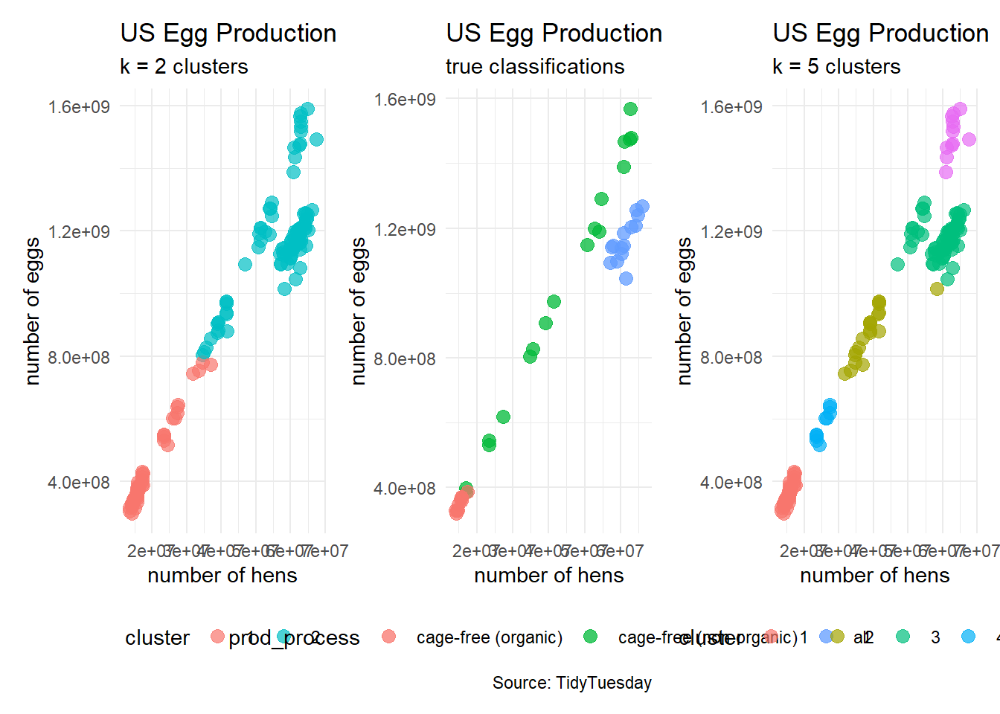

knitr::opts_chunk$set(echo = TRUE)
library("caret")
library("ggraph")
library("igraph")
library("patchwork")
library("randomForest")
library("skimr") #tools to quickly extract summary statistics
library("tidymodels")
library("tidyverse")
set.seed(123) #actually needed to turn off some randomization35: Introduction to Machine Learning (2)
Goal: overview of some machine learning techniques
Objectives:
- introduce random forests
- introduce clustering
Data: Eggs
Source: TidyTuesday data set from April 11, 2023
The data this week comes from The Humane League’s US Egg Production dataset by Samara Mendez. Dataset and code is available for this project on OSF at US Egg Production Data Set. This dataset tracks the supply of cage-free eggs in the United States from December 2007 to February 2021.
egg_df_raw <- readr::read_csv('https://raw.githubusercontent.com/rfordatascience/tidytuesday/master/data/2023/2023-04-11/egg-production.csv')str(egg_df_raw, give.attr = FALSE)spc_tbl_ [220 × 6] (S3: spec_tbl_df/tbl_df/tbl/data.frame)
$ observed_month: Date[1:220], format: "2016-07-31" "2016-08-31" ...
$ prod_type : chr [1:220] "hatching eggs" "hatching eggs" "hatching eggs" "hatching eggs" ...
$ prod_process : chr [1:220] "all" "all" "all" "all" ...
$ n_hens : num [1:220] 57975000 57595000 57161000 56857000 57116000 ...
$ n_eggs : num [1:220] 1.15e+09 1.14e+09 1.09e+09 1.13e+09 1.10e+09 ...
$ source : chr [1:220] "ChicEggs-09-23-2016.pdf" "ChicEggs-10-21-2016.pdf" "ChicEggs-11-22-2016.pdf" "ChicEggs-12-23-2016.pdf" ...skimr::skim(egg_df_raw)| Name | egg_df_raw |
| Number of rows | 220 |
| Number of columns | 6 |
| _______________________ | |
| Column type frequency: | |
| character | 3 |
| Date | 1 |
| numeric | 2 |
| ________________________ | |
| Group variables | None |
Variable type: character
| skim_variable | n_missing | complete_rate | min | max | empty | n_unique | whitespace |
|---|---|---|---|---|---|---|---|
| prod_type | 0 | 1 | 10 | 13 | 0 | 2 | 0 |
| prod_process | 0 | 1 | 3 | 23 | 0 | 3 | 0 |
| source | 0 | 1 | 23 | 23 | 0 | 108 | 0 |
Variable type: Date
| skim_variable | n_missing | complete_rate | min | max | median | n_unique |
|---|---|---|---|---|---|---|
| observed_month | 0 | 1 | 2016-07-31 | 2021-02-28 | 2018-11-15 | 56 |
Variable type: numeric
| skim_variable | n_missing | complete_rate | mean | sd | p0 | p25 | p50 | p75 | p100 | hist |
|---|---|---|---|---|---|---|---|---|---|---|
| n_hens | 0 | 1 | 110839873 | 124121204 | 13500000 | 17284500 | 59939500 | 125539250 | 341166000 | ▇▁▁▁▂ |
| n_eggs | 0 | 1 | 2606667580 | 3082457619 | 298074240 | 423962023 | 1154550000 | 2963010996 | 8601000000 | ▇▁▁▁▂ |
egg_df_raw %>%
ggplot(aes(x = n_hens, y = n_eggs)) +
geom_point(color = "blue") +
labs(title = "US Egg Production",
subtitle = "December 2007 to February 2021",
caption = "Source: TidyTuesday",
x = "number of hens",
y = "number of eggs") +
theme_minimal()Cleaning Data
Sometimes we like to perform some preprocessing of the data. In this example, we will
- focus on smaller farms where the number of hens is under 100 million
separatethe date into year, month, and day columns- turn
prod_processinto a factor variable (helps with R stuff for categorical variables)
egg_df <- egg_df_raw |>
filter(n_hens < 1e8) |>
separate(observed_month,
into = c("year", "month", "day"),
remove = FALSE)
egg_df$prod_process <- factor(egg_df$prod_process,
levels = c("cage-free (organic)",
"cage-free (non-organic)",
"all"))
# dimensions
dim(egg_df)[1] 165 9head(egg_df)# A tibble: 6 × 9
observed_month year month day prod_type prod_process n_hens n_eggs source
<date> <chr> <chr> <chr> <chr> <fct> <dbl> <dbl> <chr>
1 2016-07-31 2016 07 31 hatching e… all 5.80e7 1.15e9 ChicE…
2 2016-08-31 2016 08 31 hatching e… all 5.76e7 1.14e9 ChicE…
3 2016-09-30 2016 09 30 hatching e… all 5.72e7 1.09e9 ChicE…
4 2016-10-31 2016 10 31 hatching e… all 5.69e7 1.13e9 ChicE…
5 2016-11-30 2016 11 30 hatching e… all 5.71e7 1.10e9 ChicE…
6 2016-12-31 2016 12 31 hatching e… all 5.77e7 1.13e9 ChicE…egg_df %>%
ggplot(aes(x = n_hens, y = n_eggs)) +
geom_point(aes(color = prod_process),
size = 3, alpha = 0.75) +
labs(title = "US Egg Production",
subtitle = "December 2007 to February 2021",
caption = "Source: TidyTuesday",
x = "number of hens",
y = "number of eggs") +
theme_minimal()egg_df %>%
ggplot(aes(x = month, y = n_eggs)) +
geom_boxplot(aes(fill = month)) +
labs(title = "US Egg Production",
subtitle = "December 2007 to February 2021",
caption = "Source: TidyTuesday",
x = "month",
y = "number of eggs") +
theme_minimal() +
theme(legend.position = "none")Supervised Learning
In supervised learning has the goal of making predictions with a set of known labels for the response variable.
- Goal: predict the production type (e.g. cage-free) of each report of the egg data.
response variable:
prod_processpredictor variables:
n_hens,n_eggs,month,year,prod_typemodel formula:
prod_process ~ n_hens + n_eggs + month + year + prod_type
egg_split <- initial_split(egg_df)
egg_train <- training(egg_split)
egg_test <- testing(egg_split)Random Forests
“Random forest models are ensembles of decision trees. A large number of decision tree models are created for the ensemble based on slightly different versions of the training set. When creating the individual decision trees, the fitting process encourages them to be as diverse as possible. The collection of trees are combined into the random forest model and, when a new sample is predicted, the votes from each tree are used to calculate the final predicted value for the new sample.” —tidymodels.org
Define the Forest
random_forest_model <-
rand_forest(trees = 250) %>%
set_engine("ranger") %>%
set_mode("classification")Fitting the Forest
random_forest_fit <-
random_forest_model %>%
fit(prod_process ~ n_hens + n_eggs + month + year + prod_type,
data = egg_train)
random_forest_fitparsnip model object
Ranger result
Call:
ranger::ranger(x = maybe_data_frame(x), y = y, num.trees = ~250, num.threads = 1, verbose = FALSE, seed = sample.int(10^5, 1), probability = TRUE)
Type: Probability estimation
Number of trees: 250
Sample size: 123
Number of independent variables: 5
Mtry: 2
Target node size: 10
Variable importance mode: none
Splitrule: gini
OOB prediction error (Brier s.): 0.001225525 Visualizing the Forest
(This is an old-fashioned code using the caret package, and Derek really should revise his knowledge here.)
# OLD-FASHIONED WAY with the caret package
model_rf <- caret::train(prod_process ~ n_hens + n_eggs + month + year + prod_type,
data = egg_train,
method = "rf")
model_rfRandom Forest
123 samples
5 predictor
3 classes: 'cage-free (organic)', 'cage-free (non-organic)', 'all'
No pre-processing
Resampling: Bootstrapped (25 reps)
Summary of sample sizes: 123, 123, 123, 123, 123, 123, ...
Resampling results across tuning parameters:
mtry Accuracy Kappa
2 0.99433 0.9914711
10 1.00000 1.0000000
19 1.00000 1.0000000
Accuracy was used to select the optimal model using the largest value.
The final value used for the model was mtry = 10.model_rpart <- caret::train(prod_process ~ n_hens + n_eggs + month + year + prod_type,
data = egg_train,
method = "rpart")
model_rpartCART
123 samples
5 predictor
3 classes: 'cage-free (organic)', 'cage-free (non-organic)', 'all'
No pre-processing
Resampling: Bootstrapped (25 reps)
Summary of sample sizes: 123, 123, 123, 123, 123, 123, ...
Resampling results across tuning parameters:
cp Accuracy Kappa
0.000000 1.0000000 1.0000000
0.474359 0.7759533 0.6646848
0.525641 0.5132879 0.2852174
Accuracy was used to select the optimal model using the largest value.
The final value used for the model was cp = 0.#source: https://shiring.github.io/machine_learning/2017/03/16/rf_plot_ggraph
tree_func <- function(final_model,
tree_num) {
# get tree by index
tree <- randomForest::getTree(final_model,
k = tree_num,
labelVar = TRUE) %>%
tibble::rownames_to_column() %>%
# make leaf split points to NA, so the 0s won't get plotted
mutate(`split point` = ifelse(is.na(prediction), `split point`, NA))
# prepare data frame for graph
graph_frame <- data.frame(from = rep(tree$rowname, 2),
to = c(tree$`left daughter`, tree$`right daughter`))
# convert to graph and delete the last node that we don't want to plot
graph <- graph_from_data_frame(graph_frame) %>%
delete_vertices("0")
# set node labels
V(graph)$node_label <- gsub("_", " ", as.character(tree$`split var`))
V(graph)$leaf_label <- as.character(tree$prediction)
V(graph)$split <- as.character(round(tree$`split point`, digits = 2))
# plot
plot <- ggraph(graph, 'dendrogram') +
theme_bw() +
geom_edge_link() +
geom_node_point() +
geom_node_text(aes(label = node_label), na.rm = TRUE, repel = TRUE) +
geom_node_label(aes(label = split), vjust = 2.5, na.rm = TRUE, fill = "white") +
geom_node_label(aes(label = leaf_label, fill = leaf_label), na.rm = TRUE,
repel = TRUE, colour = "white", fontface = "bold", show.legend = FALSE) +
theme(panel.grid.minor = element_blank(),
panel.grid.major = element_blank(),
panel.background = element_blank(),
plot.background = element_rect(fill = "white"),
panel.border = element_blank(),
axis.line = element_blank(),
axis.text.x = element_blank(),
axis.text.y = element_blank(),
axis.ticks = element_blank(),
axis.title.x = element_blank(),
axis.title.y = element_blank(),
plot.title = element_text(size = 18))
print(plot)
}
tree_num <- which.min(model_rf$finalModel$forest$ndbigtree == min(model_rf$finalModel$forest$ndbigtree))
tree_func(final_model = model_rf$finalModel, tree_num)Classification Error
egg_predictions <- predict(model_rf, newdata = egg_test)
table(egg_predictions)egg_predictions
cage-free (organic) cage-free (non-organic) all
12 16 14 plot_1 <- egg_test %>%
ggplot(aes(x = n_hens, y = n_eggs)) +
geom_point(aes(color = egg_predictions),
size = 3, alpha = 0.75) +
labs(title = "US Egg Production",
subtitle = "predictions",
caption = "Source: TidyTuesday",
x = "number of hens",
y = "number of eggs") +
theme_minimal() +
theme(legend.position = "bottom")
plot_2 <- egg_test %>%
ggplot(aes(x = n_hens, y = n_eggs)) +
geom_point(aes(color = prod_process),
size = 3, alpha = 0.75) +
labs(title = "US Egg Production",
subtitle = "true classifications",
caption = "Source: TidyTuesday",
x = "number of hens",
y = "number of eggs") +
theme_minimal() +
theme(legend.position = "bottom")
# patchwork
plot_1 + plot_2
confusionMatrix(egg_predictions, egg_test$prod_process)Confusion Matrix and Statistics
Reference
Prediction cage-free (organic) cage-free (non-organic) all
cage-free (organic) 10 2 0
cage-free (non-organic) 0 16 0
all 0 0 14
Overall Statistics
Accuracy : 0.9524
95% CI : (0.8384, 0.9942)
No Information Rate : 0.4286
P-Value [Acc > NIR] : 5.568e-13
Kappa : 0.9276
Mcnemar's Test P-Value : NA
Statistics by Class:
Class: cage-free (organic) Class: cage-free (non-organic)
Sensitivity 1.0000 0.8889
Specificity 0.9375 1.0000
Pos Pred Value 0.8333 1.0000
Neg Pred Value 1.0000 0.9231
Prevalence 0.2381 0.4286
Detection Rate 0.2381 0.3810
Detection Prevalence 0.2857 0.3810
Balanced Accuracy 0.9688 0.9444
Class: all
Sensitivity 1.0000
Specificity 1.0000
Pos Pred Value 1.0000
Neg Pred Value 1.0000
Prevalence 0.3333
Detection Rate 0.3333
Detection Prevalence 0.3333
Balanced Accuracy 1.0000Unsupervised Learning
In unsupervised learning, we try to find structure in the data of the response variable without predetermined labels.
- Goal: classify farms into groups by size
K-Means Clustering
Numerical Variables
egg_numerical <- egg_df |>
select(n_hens, n_eggs)
head(egg_numerical)# A tibble: 6 × 2
n_hens n_eggs
<dbl> <dbl>
1 57975000 1147000000
2 57595000 1142700000
3 57161000 1093300000
4 56857000 1126700000
5 57116000 1096600000
6 57750000 1132900000egg_numerical %>%
ggplot(aes(x = n_hens, y = n_eggs)) +
geom_point(color = "black") +
labs(title = "US Egg Production",
subtitle = "How can we organize this data?",
caption = "Source: TidyTuesday",
x = "number of hens",
y = "number of eggs") +
theme_minimal() +
theme(legend.position = "bottom")First Look
Are there 3 types of chicken farms in the data?
clusters3 <- kmeans(egg_numerical, 3)
egg_df_with_clusters <- cbind(egg_numerical, clusters3$cluster)
colnames(egg_df_with_clusters) <- c("n_hens", "n_eggs", "cluster")
# turn cluster from a numerical variable into a factor (categorical) variable
egg_df_with_clusters$cluster <- factor(egg_df_with_clusters$cluster)
# show a sample of observations
egg_df_with_clusters |>
slice_sample(n = 10, replace = TRUE) n_hens n_eggs cluster
1 14100000 298074240 2
2 64171000 1212900000 3
3 27300000 636840617 1
4 13500000 304762114 2
5 64955000 1590747994 3
6 60202000 1120900000 3
7 17491500 386912160 2
8 35680000 826794977 1
9 62135000 1204400000 3
10 39083000 908679086 1egg_df_with_clusters %>%
ggplot(aes(x = n_hens, y = n_eggs)) +
geom_point(aes(color = cluster),
size = 3, alpha = 0.7) +
labs(title = "US Egg Production",
subtitle = "k = 3 clusters",
caption = "Source: TidyTuesday",
x = "number of hens",
y = "number of eggs") +
theme_minimal()How to select the number of clusters
egg_df_with_clusters %>%
ggplot(aes(x = n_hens, y = n_eggs)) +
geom_point(aes(color = cluster),
size = 3, alpha = 0.7) +
geom_point(aes(x = n_hens, y = n_eggs),
color = "black",
data = data.frame(clusters3$centers),
size = 5) +
labs(title = "US Egg Production",
subtitle = "k = 3 clusters (with centers)",
caption = "Source: TidyTuesday",
x = "number of hens",
y = "number of eggs") +
theme_minimal()We start with an \(d\)-dimensional data set of numerical variables and prescribe a number \(k\) for the number of clusters and run the kmeans algorithm.
- Each cluster \(C_k\) has \(n_k\) points labeled \(x_i\) in \(d\)-dimensional space
- Each cluster has a cluster center \(\mu_k\)
- Each cluster has a within-sum-of-squares
\[\text{WSS} = \displaystyle\sum_{x_{i} \in C_{k}} (x_i−\mu_k)^{2}\]
Thus, our metric for the clustering will be the reported total-within-sum-of-squares
\[\text{TWSS} = \displaystyle\sum_{j=1}^{k}\sum_{x_{i} \in C_{k}} (x_i−\mu_k)^{2}\]
- as the number \(k\) of clusters increases, the TWSS decreases
- but we generally do not want a large number of clusters for later interpretation
Scree Plot
k_vals <- 1:9
twss <- rep(NA, 9)
for(k in k_vals){
this_clustering <- kmeans(egg_numerical, k)
twss[k] <- this_clustering$tot.withinss
}
df_analysis <- data.frame(k_vals, twss)
df_analysis %>%
ggplot(aes(x = k_vals, y = twss)) +
geom_line() +
geom_point(size = 3) +
labs(title = "Scree Plot",
subtitle = "How many clusters should we pick?",
caption = "Math 32",
x = "number of clusters",
y = "total within sum of squares") +
scale_x_continuous(breaks = 1:9) +
theme_minimal()- some advise to pick the “elbow” in the scree plot (where the concavity is greatest)
- some advise to pick the place where TWSS starts to barely improve
clusters2 <- kmeans(egg_numerical, 2)
egg_df_with_clusters <- cbind(egg_numerical, clusters2$cluster)
colnames(egg_df_with_clusters) <- c("n_hens", "n_eggs", "cluster")
# turn cluster from a numerical variable into a factor (categorical) variable
egg_df_with_clusters$cluster <- factor(egg_df_with_clusters$cluster)
plot_k2 <- egg_df_with_clusters %>%
ggplot(aes(x = n_hens, y = n_eggs)) +
geom_point(aes(color = cluster),
size = 3, alpha = 0.7) +
labs(title = "US Egg Production",
subtitle = "k = 2 clusters",
# caption = "Source: TidyTuesday",
x = "number of hens",
y = "number of eggs") +
theme_minimal() +
theme(legend.position = "bottom")clusters5 <- kmeans(egg_numerical, 5)
egg_df_with_clusters <- cbind(egg_numerical, clusters5$cluster)
colnames(egg_df_with_clusters) <- c("n_hens", "n_eggs", "cluster")
# turn cluster from a numerical variable into a factor (categorical) variable
egg_df_with_clusters$cluster <- factor(egg_df_with_clusters$cluster)
plot_k5 <- egg_df_with_clusters %>%
ggplot(aes(x = n_hens, y = n_eggs)) +
geom_point(aes(color = cluster),
size = 3, alpha = 0.7) +
labs(title = "US Egg Production",
subtitle = "k = 5 clusters",
# caption = "Source: TidyTuesday",
x = "number of hens",
y = "number of eggs") +
theme_minimal() +
theme(legend.position = "bottom")#patchwork
plot_k2 + plot_2 + plot_k5